使用手册[标注]
- 1: 基础
- 1.1: 注册
- 1.2: 创建标注任务
- 1.3: 作业界面
- 1.4: 任务页面
- 1.5: 任务详情
- 1.6: 标注工具界面
- 1.7: 基础导航
- 1.8: 顶部面板
- 1.9: 控制栏
- 1.10: 标注对象栏
- 1.11: 标注工作区
- 1.12: 设置
- 1.13: 标注形状的类型
- 1.14: 形状模式 (基础)
- 1.15: 术语
- 2: 高级
1 - 基础
1.1 - 注册
要开始在训练平台上标注和训练，您需要创建账户或登录到现有账户。
如果需要创建帐号或登录，请进入登录页面:
备注: 网址是通常是
服务器IP:8080
用户注册
要注册为非管理员用户，请执行以下操作:
-
单击 创建账号.
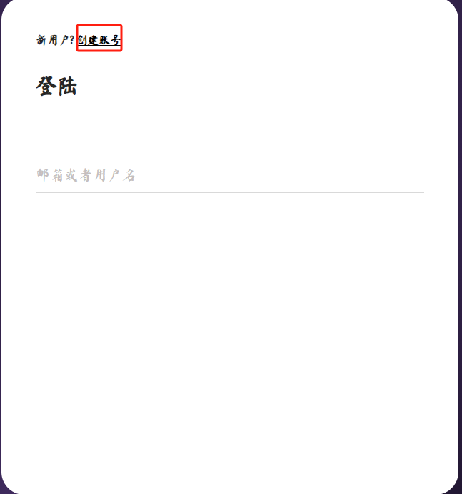
-
填写所有空白字段, 单击 创建账号 按钮.
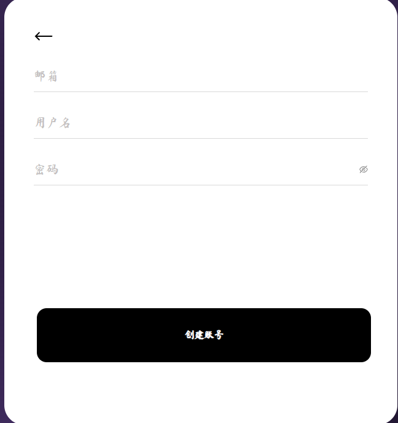
从电子邮件自动生成用户名。如果需要，您可以编辑它。
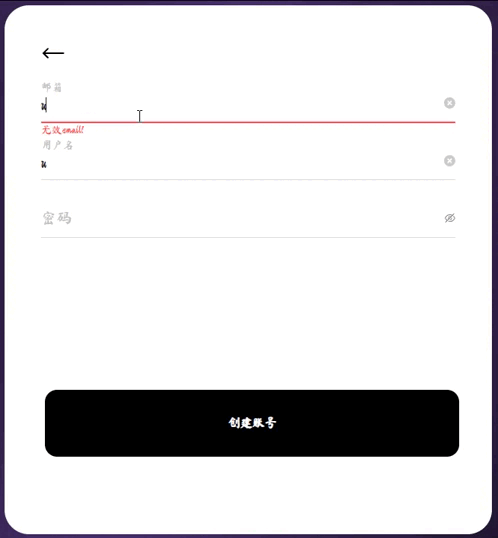
账户登陆
要登陆您的帐户，请执行以下操作:
- 转到登陆界面.
- 输入用户名或电子邮件。密码字段将出现。
- 输入密码，单击 登陆.
1.2 - 创建标注任务
要在自训练平台上标注，您需要创建一个标注任务并指定其参数。
要创建任务, 请在 任务 页面上单击 + 并 选择 创建一个新任务.
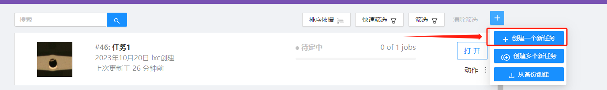
创建任务
要创建新任务，请打开任务配置:
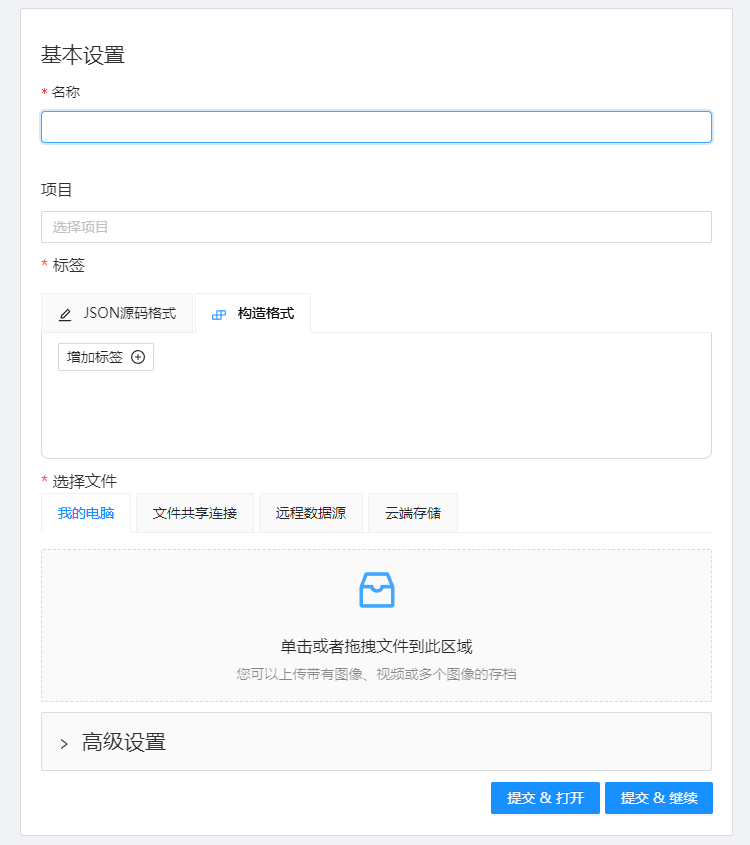
并指定以下参数:
-
在 名称 字段, 输入新任务的名称.
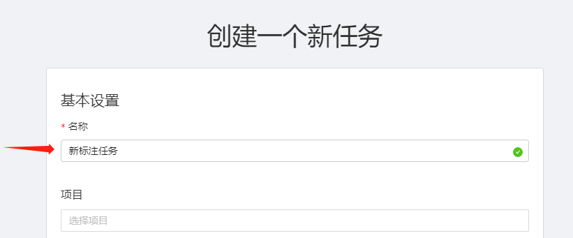
-
(可选) 从 项目 下拉框, 为新任务选择一个项目.
如果您不想将任务分配给任何项目，请将此字段留空。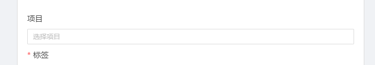
备注: 如果任务不属于项目，则以下步骤是有效的。
如果任务已分配给项目，则项目的标签将应用于任务。 -
在构造格式标签页上，单击增加标签。.
标签构造器菜单将会打开: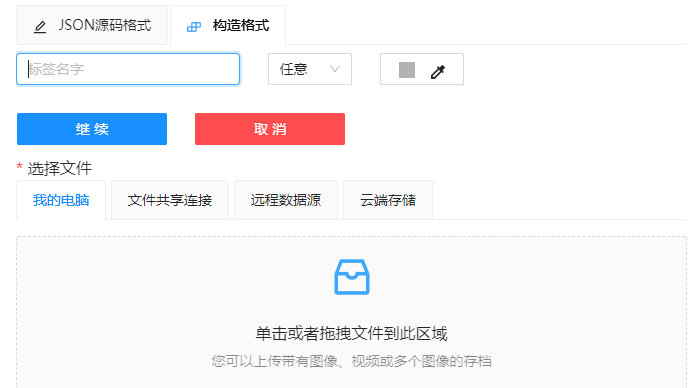
-
在 标签名字 字段, 输入标签名.
-
(可选)选择标签的颜色.
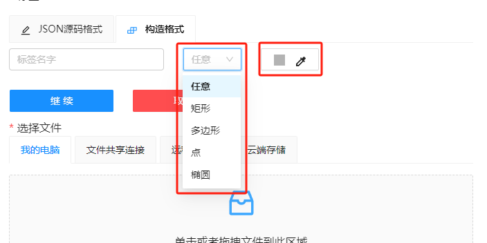
-
单击 选择文件 上传标注文件.
-
单击 继续 提交标签并开始添加一个新标签
或者取消来终止当前标签并返回到标签列表. -
单击提交并打开提交配置并打开创建的任务,
或者提交并继续，提交配置并开始一个新任务.
标签形状
标签(或类)是可以标注的对象类别.
标签形状 将标签的使用限制为特定的形状工具.
任意是不限制使用的默认设置,标记到任何特定的形状工具。
例如，你添加了:
- 用标签形状标记
通孔，类型为椭圆 - 用标签形状标记
缺口，类型为任意
因此:
-
通孔标签将只适用于椭圆形状. -
缺口标签将适用于所有形状.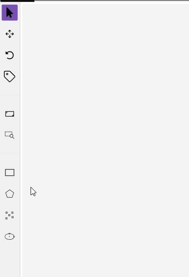
控制侧边栏上的工具 将仅限于选定的形状类型.
例如, 如果你选择 任意,
所有工具都是可用的,
但如果你为所有标签选择 矩形,
只有矩形工具会被修改
在侧边栏可见。
你可以根据需要改变标签的形状. 此更改不会影响现有标注.
例如，如果你使用多边形创建对象，然后更改 标签形状为椭圆，所有之前创建的对象将保留 多边形。但是，您将无法添加新的多边形 具有相同标签的对象。
选择文件
有几种方法可以上传文件:
| 文件源 | 详述 |
|---|---|
| 我的电脑 | 使用此选项从您的笔记本电脑或个人电脑中选择文件. 选择文件: 1. 点击选择文件字段: 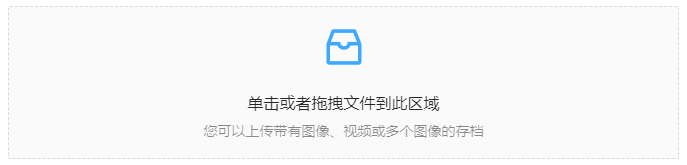. 2. 选择要上传的文件. |
| 文件共享连接 | 高级选项. 从本地或云共享文件夹中上传文件. 备注, 首先需要挂载一个文件共享. |
| 远程数据源 | 暂未提供. |
| 云端存储 | 暂未提供. |
源码格式编辑标签
Json源码格式是高级用户处理标签的一种方式。
当需要将标签从一个独立任务复制到另一个独立任务时，它很有用.
备注: 请谨慎更改现有任务/项目的源码规范。 删除一些"id"属性将导致丢失现有的标注。 此属性将从您插入到此字段的任何文本中自动删除。
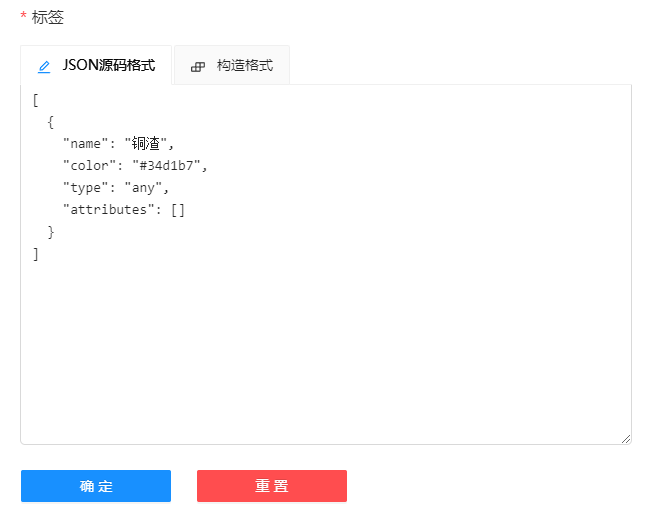
源码格式将标签数据呈现在 .json 格式, 可以选择编辑和复制标签作为文本. 确定 按钮应用更改, 重置 按钮取消更改.
高级设置
使用高级配置设置任务的其他参数 并定制它以满足特定的需求或要求.
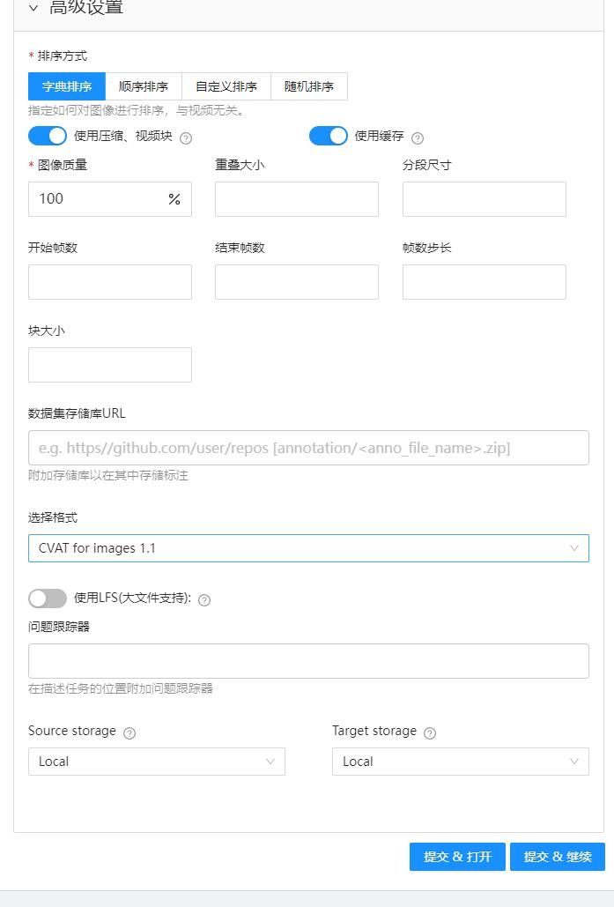
可选参数如下:
| 元素 | 详述 |
|---|---|
| 排序方式 | 数据排序的几种方法. 例如 2.jpeg, 10.jpeg, 1.jpeg 排序后的序列是: 1.jpeg, 10.jpeg, 2.jpeg 1.jpeg, 2.jpeg, 10.jpeg 2.jpeg, 10.jpeg, 1.jpeg |
| 使用压缩/视频块 | 使用此参数将用于标注的图像数据集划分为短视频片段(由帧组成的zip文件). Zip文件较大，但不需要在客户端解码，视频片段较小，但需要解码. 对于视频任务，建议关闭此参数，以减少客户端与服务器之间的流量. |
| 使用缓存 | 选择复选框, 以启用 实时 数据处理, 以减少任务创建时间并以 删除不受欢迎的项目的策略将数据存储在缓存. 更多信息，请参见 动态数据准备. |
| 图像质量 | 标注平台有两种类型的数据:原始质量和压缩. 原始质量图像用于数据集导出 和自动标注. 压缩图像仅用于注释，以减少服务器和客户端之间的流量. 建议仅当图像中包含不小于原始图像质量的小物体时，才调整压缩级别. 值范围从 5 (高度压缩的图像) to 100 (未压缩的图像) |
| 重叠大小 | 使用此参数创建重叠的段，使跟踪从一个段连续到另一个段. 备注 这个功能只适用于边界框. 该参数有以下选项: 插值任务 (视频序列). 如果您在两个相邻的段上使用边界框进行标注, 它们将 合并为单个边界框. 如果重叠为零或边界框不准确(没有正确地将对象包含在相邻线段上，不对齐或扭曲)，可能很难准确地在线段之间插入对象的运动. 结果，同一个对象会被创建多个轨道. 标注任务 (独立图像). 如果一个对象存在于重叠大于零的线段上, 并且这些线段的标注正确，则这些线段将自动合并为一个 对象. 如果重叠为零或在 相邻段上标注不准确(未正确包围对象、未对齐、扭曲)，则可能难以准确跟踪对象。因此，将为同一个对象创建多个边界框 . 如果不同段(重叠的帧)上的标注非常不同，则同一个对象将有两个形状 。为避免这种情况，准确标注第一个线段上的对象和第二个线段上的相同对象，在两个标注之间创建一个 的轨迹. |
| 分段尺寸 | 使用此参数可以将数据集划分为更小的部分。例如，如果您想在多个 标注器之间共享数据集，则可以将其分割为更小的部分，并将每个部分分配给单独的作业。 这允许标注并发地处理相同的数据集. |
| 开始帧数 | 定义视频的第一帧. |
| 结束帧数 | 定义视频的最后一帧. |
| 帧数步长 | 使用这个参数来过滤视频帧或图像数据集. 指定帧步长值，以便在数据集中只包含 的特定帧或图像. 例如，如果帧步长为’ 25 ‘，则数据集将包含每25帧或图像. 如果一个 的视频有 100帧，将帧步长设置为25将只在数据集中包含1、26、51、76和100帧. 这对于减少数据集的大小，或者聚焦于感兴趣的特定帧或图像( )非常有用. |
| 块大小 | 定义从客户端发送到服务器时，一个块中打包的帧的数量。 服务器自动定义该块是否为空。 推荐值: |
| 问题跟踪器 | 问题跟踪器使用此参数指定问题跟踪器的URL. |
| 源存储 | 指定用于导入资源(如标注和备份)的源存储。如果任务被分配给项目，使用项目源存储切换来确定是使用项目值还是指定新的值。 |
| 目标存储 | 指定用于导出标注和备份等资源的目标存储(本地或云)。 如果在项目中创建了任务，使用使用项目目标存储切换来确定是 使用项目的值还是指定新值. |
单击保存并打开任务 提交 & 打开 .
要按顺序创建多个任务，请单击 提交 & 继续.
创建的任务将显示在 任务页面.
1.3 - 作业界面
在作业页面中，用户(例如，具有工作人员角色的用户)可以查看分配给他们的作业，而无需访问任务页面，
以及跟踪进度，排序和应用过滤器到工作列表.
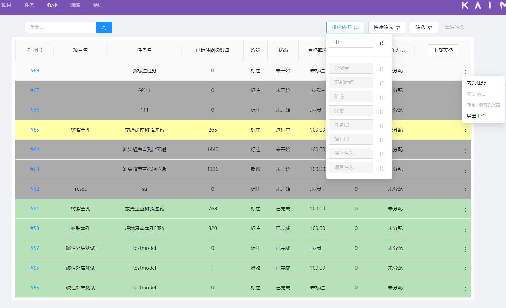
在作业页面上，有表格显示作业列表. 每一行数据包括:
要在新选项卡中打开该作业,按住
Ctrl单击该作业ID.
在左上角有一个搜索栏，你可以使用它来查找被分配人员、阶段、状态等。
筛选
应用筛选器禁用快速筛选器.
筛选器的工作原理与标注过滤器类似， 你可以从属性中创建规则 运算符 和值 并将规则 分组. 有关详细信息,请参阅 筛选部分. 了解更多关于日期和时间选择.
要清除所有筛选,请单击 清除筛选.
支持为作业列表的属性
| 属性 | 支持的值 | 描述 |
|---|---|---|
状态 |
所有状态的名称 | 作业状态 (可在作业内的菜单中更改) |
阶段 |
所有阶段的名称 | 作业的阶段 (通过任务页面上的下拉列表指定) |
维度 |
2D 或 3D |
取决于数据格式 |
分配 |
用户名 | 分配人员是正在工作的用户。 (在任务页上指定) |
上次更新 |
最后修改的日期和时间(或取值范围) | 日期可以以’ dd.MM.yyyy HH:mm ‘格式输入，也可以在单击输入框时出现的窗口中选择日期 |
ID |
作业ID的数字或范围 | |
任务ID |
任务ID的数字或范围 | |
项目ID |
项目ID的数字或范围 | |
任务名称 |
任务名称 | 在创建任务时设置， 可以在(任务页面) 中更改 |
项目名称 |
项目名称 | 在创建项目时指定， 可以在(项目部分)上进行更改 |
1.4 - 任务页面
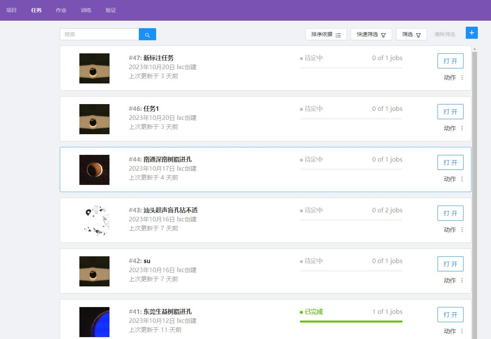
任务页面包含元素，每个元素与一个单独的任务相关。它们按创建顺序排序.
每个元素包含:任务名称，预览，进度条，按钮 打开, 菜单 动作.
每个按钮负责菜单中的动作特定功能:
导出任务数据集— 下载特定格式的标注或标注和图像. 更多信息请参阅导出/导入数据集 部分.上传标注以特定格式上传标注. 更多信息请参阅导出/导入数据集 部分.自动标注— 未开发.备份任务— 将此任务备份到zip归档文件中. 更多信息请参阅备份部分.移动到项目— 将任务移动到项目(只能移动不属于任何项目的任务)。 如果标签不匹配，您可以在项目/任务中创建或删除必要的标签。 有些任务标签可以与目标项目标签相匹配.删除— 删除任务.
在左上角有一个搜索栏，使用它你可以找到任务的分配人员，任务名称等. 右上角有排序, 快速筛选和筛选.
筛选
应用筛选器禁用快速筛选器.
筛选器的工作原理与标注过滤器类似， 你可以从属性中创建规则 运算符 和值 并将规则 分组. 有关详细信息,请参阅 筛选部分. 了解更多关于日期和时间选择.
要清除所有筛选,请单击 清除筛选.
支持为任务列表的属性
| 属性 | 支持的值 | 描述 |
|---|---|---|
维度 |
2D or 3D |
取决于数据格式 |
状态 |
标注, 质检 or 已完成 |
|
数据 |
视频, 图像 |
取决于数据格式 |
子集 |
测试, 训练, 验证 或者自定义创建 |
[read more] [subset] |
分配人员 |
用户名 | 分配人员是从事项目、任务或工作的用户。 (在任务详情页上指定) |
所有者 |
用户名 | 拥有项目、任务或作业的用户 |
上次更新 |
最后修改的日期和时间(或取值范围) | 日期可以以’ dd.MM.yyyy HH:mm ‘格式输入，也可以在单击输入框时出现的窗口中选择日期 |
ID |
任务ID的数字或范围 | |
项目ID |
项目ID的数字或范围 | |
名称 |
名称 | 在“任务”页上-任务的名称， 在“项目”页上-项目的名称 |
项目名称 |
项目名称 | 在创建项目时指定， 可以在(项目部分)上进行更改 |
按打开按钮进入任务详情.
1.5 - 任务详情
任务详情是一个任务页面，包含一个预览，一个进度条
以及任务的详细信息(在创建任务时指定)和作业部分.
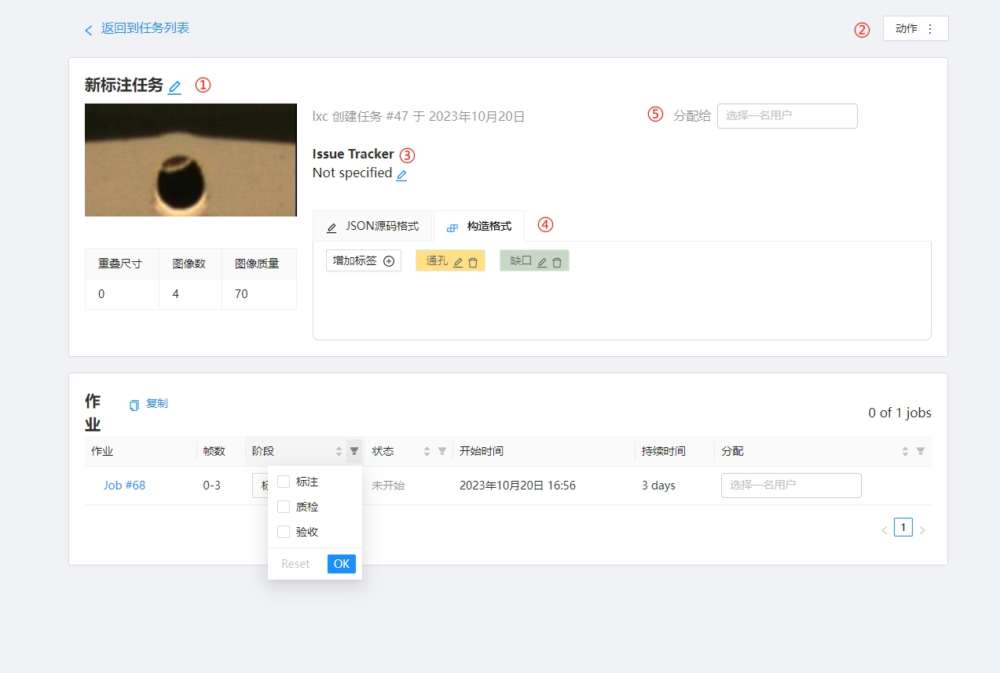
-
接下来的操作可以在这个页面上看到:
- 更改任务的标题.
- 打开
动作菜单. - 更改问题跟踪器或打开问题跟踪器(如果指定了).
- 更改标签(仅当任务与项目无关时才可用).
- 分配给 — 用于将任务分配给一个人. 开始输入分配人的姓名或 从下拉列表中选择正确的人. 在用户列表中，您将只看到创建任务所在组织的用户.
-
作业 — 是特定任务的所有作业的列表。你可以在这里找到下一个数据:
- 作业的名字和一个超链接.
- 帧数 — 帧数区间.
- 作业的阶段. 阶段由下拉列表指定.
有三个阶段:
标注,质检或者验收. 这个值会影响任务进度条. - 作业的状态. 状态可以由作业内的菜单中指定的用户更改.
有几种可能的状态:
未开始,进行中,拒收,已完成. - 开始时间 — 作业开始日期.
- 持续时间 — 工作正在进行的时间量.
- 分配人员是正在工作的用户. 您可以开始输入分配人的名字和/或从下拉列表中选择正确的人.
复制.通过点击复制，你将把作业列表复制到剪贴板。 工作列表包含到工作的直接链接.
您可以按状态筛选或排序作业，也可以按分人员.
点击作业部分中的链接开始标注.
在某些情况下，可以有多个链接。这取决于你的尺寸
任务和重叠大小和分段尺寸参数.
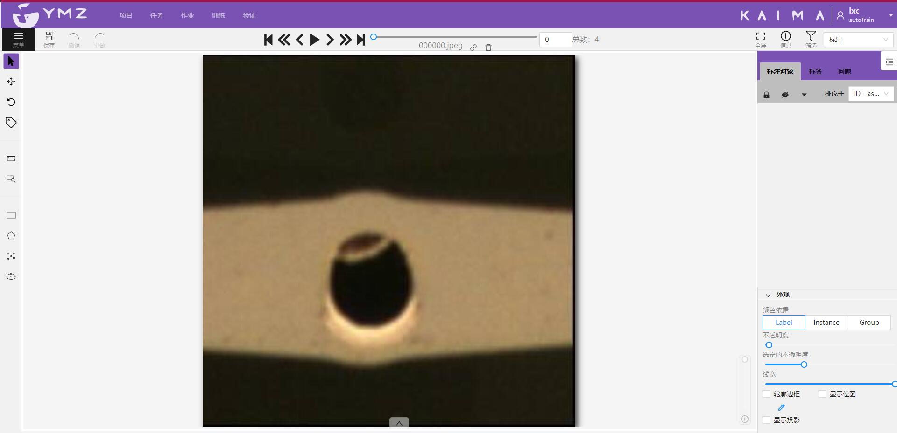
1.6 - 标注工具界面
主要用户界面
该工具包括:
-
页眉- 固定标题用于导航和帐户设置; -
顶部面板— 包含导航按钮、主要功能和菜单访问; -
工作区— 显示图像的空间; -
控制栏— 包含导航图像、缩放的工具, 创建形状和编辑轨迹(合并、拆分、分组); -
对象栏— contains label filter, two lists: objects (on the frame) and labels (of objects on the frame) and appearance settings.
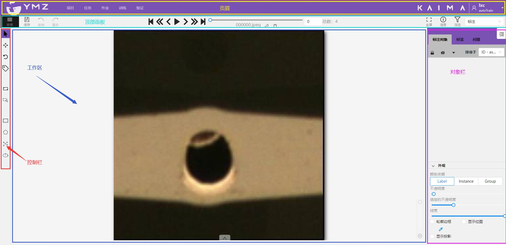
1.7 - 基础导航
-
使用下面的箭头移动到下一帧/上一帧. 使用滚动条滑块滚动帧. 几乎每个按钮都有快捷键. 要获得有关快捷方式的提示，只需将鼠标指针移动到UI元素上.
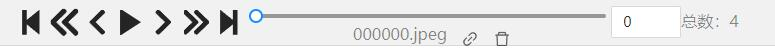
-
要导航图像，请使用控件侧边栏上的按钮. 另一种移动图像的方法是在没有标注对象的区域内按住鼠标左键. 如果按下了
鼠标滚轮, 那么所有的标注对象都会被忽略. 否则, 移动的将是高亮的边界框，而不是图像本身.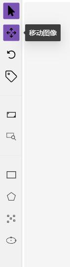
-
如果数据集有Gerber图像,可以使用按钮
显示Gerber来加载Gerber二值图跟原图对比 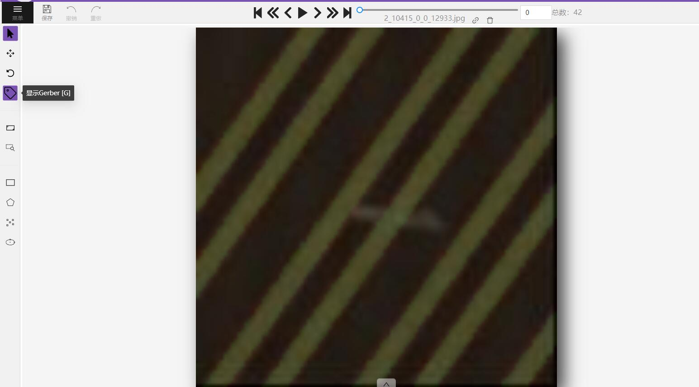 -
可以使用侧边栏控件上的按钮来缩放感兴趣的区域. 使用按钮
调整图像以适应工作空间中的图像. 你也可以使用鼠标滚轮来缩放图像 (图像将相对于当前光标位置进行放大).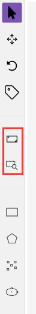
1.8 - 顶部面板
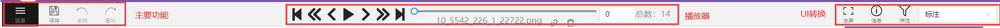
菜单按钮
它是标注工具的主菜单。它可以用于下载，上传和删除标注.
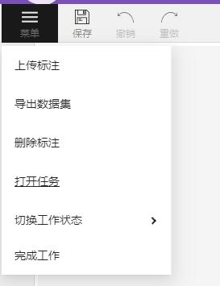
按钮功能:
-
上传标注 — 上传标注到任务.
-
导出数据集 — 从任务中下载支持的格式之一的数据集. 你也可以输入一个自定义名称并启用保存图像 复选框，如果您希望数据集包含图像.
-
删除标注 — 调用确认窗口, 如果单击删除, 当前作业的标注将被删除 , 如果你点击选择范围，你可以删除范围帧上的标注，如果你激活复选框 仅删除轨迹的关键帧那么只会从选定范围内的曲目中删除关键帧.
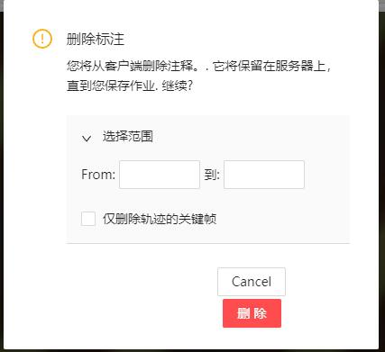
-
打开任务 — 打开一个包含任务详细信息的页面.
-
切换作业状态 - 切换作业的状态 (
未开始,进行中,拒收,已完成). -
完成作业 - changes the job stage and state to
acceptanceandcompleted/annotationandnewcorrespondingly.
保存作业
保存当前作业的标注。该按钮有保存过程的指示.
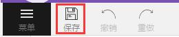
撤销-重做按钮
使用按钮来撤销或重做操作.
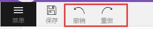
播放器
转到第一个/最后一个的帧.
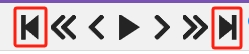
使用预定义的步长转到下一帧/上一帧. 快捷键:
V — 后退一步, C — 前进一步. 默认步长是10帧
(更改账户菜单 - > 设置 - > 播放步长).
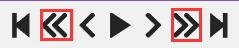
切换到下一帧/上一帧的按钮.
快捷键: D - 上一个, F - 下一个.
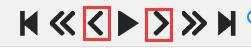
播放一组画面或一组图像. 快捷键: Space (更改为账户菜单 —> 设置 —> 播放速度).
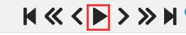
转到一个特定的帧. 按 ~ 键聚焦到元素.
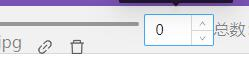
删除帧.
快捷键: Alt+Del
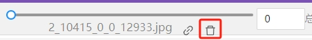
全屏
全屏播放模式。键盘快捷键是 F11.
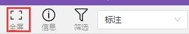
信息
打开作业信息.
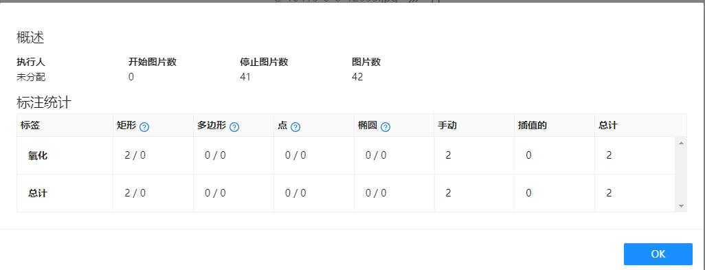
概览:
执行人- 被分配作业的人.起始帧- 此工作业中第一帧的编号.结束帧- 最后一帧的编号.帧数- 作业中所有帧的总数.
标注的统计数据:
这是一个表格数量的已创建形状，按标签排序 (例如氧化) 以及标注的类型 (形状，轨迹). 以及手动和插值帧的数量.
UI切换器
切换用户界面模式.
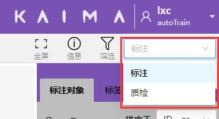
1.9 - 控制栏
导航
导航块 - 包含用于移动和旋转图像的工具.
| 图标 | 描述 |
|---|---|
 |
光标 (Esc)- 一个基础的标注编辑工具. |
 |
移动图像- 一个用于移动图像的工具，没有编辑的可能性. |
 |
旋转- 旋转当前帧的两个按钮顺时针 ( Ctrl+R) 和逆时针 (Ctrl+Shift+R).你可以在设置中启用 旋转所有图像来旋转作业中的所有图像 |
变焦
变焦块 - 包含图像缩放工具.
| 图标 | Description |
|---|---|
 |
Fit image- fits image into the workspace size.Shortcut - double click on an image |
Select a region of interest- zooms in on a selected region.You can use this tool to quickly zoom in on a specific part of the frame. |
形状
形状块 - 包含所有创建形状的工具.
| Icon | 描述 | 章节链接 |
|---|---|---|
 |
矩形 |
形状模式; 轨迹模式; 按4个点绘制 |
 |
多边形 |
用多边形标注; 带有多边形的轨迹模式 |
 |
点 |
用点进行标注 |
 |
椭圆 |
用椭圆标注 |
 |
打开一个问题 |
质检 (仅在质检模式下可用) |
1.10 - 标注对象栏
在对象侧栏中，您可以看到当前可用对象的列表
框架。下图展示了这个列表的样子:
| 形状模式 |
|---|
| 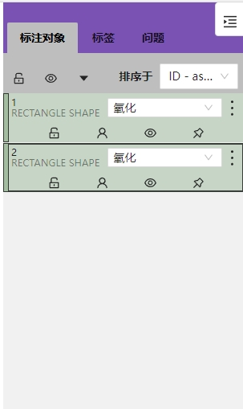 |
对象属性
筛选 输入框

如何使用筛选在高级指南中有描述此处.
对象列表
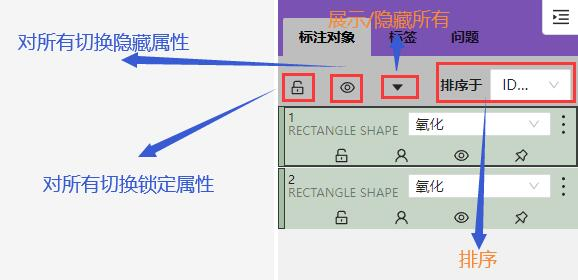
- 切换所有锁定属性 - 切换帧中所有对象的锁定属性.
- 切换所有隐藏属性 - 切换帧中所有对象的隐藏属性.
- 展示/折叠 所有 - 折叠/展示帧中所有对象的细节字段.
- 排序 - 对对象列表进行排序: 更新时间, ID - 升序, ID - 降序
侧边栏里的对象
可以通过选择标签属性来更改形状的类型。
例如，它可能如下图所示:
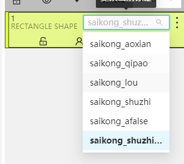
对象动作菜单
动作菜单调出按钮:
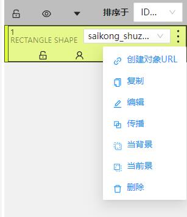
动作菜单包括:
-
创建对象URL - 在剪贴板上放置一个指向对象的链接。 打开链接后，该对象将被筛选.
-
复制 - 复制一个对象. 键盘快捷键是 Ctrl + C > Ctrl + V.
-
传播 - 将表单复制到多个框架 并显示一个对话框,您可以在其中指定复制对象的数量或要复制到的框架. 键盘快捷键是 Ctrl + B.
有两种选择:- 向前传播 (
 ) 在
) 在N个 后续的 帧的相同未知创建对象的副本. - 向后传播 (
 ) 在
) 在N个 先前的 帧的相同位置创建对象的副本.
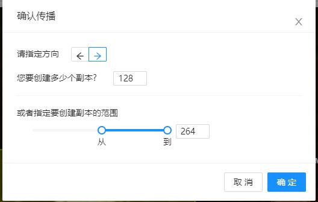
- 向前传播 (
-
当背景 - 将对象移动到背景。键盘快捷键 - or _
-
当前景 - 将对象移动到前景。键盘快捷键 + or =
-
删除 - 删除对象。键盘快捷键 Del, Shift+Del.
形状可以被锁定，以防止它被修改或移动的意外。锁定对象的快捷方式: L.
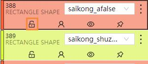
一个形状可以被遮挡. 快捷方式: Q. 这种形状的边界是虚线的.
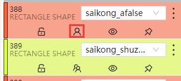

可以更改对象在帧上显示的方式(显示或隐藏).

切换固定属性 - 启用时，不能通过拖放来移动形状.

标签
在这个选项卡中，您可以锁定或隐藏特定标签的对象. 要改变特定标签的颜色, 你需要进入任务页面，点击编辑按钮选择颜色, 这样，您将更改任务中所有作业的标签颜色.
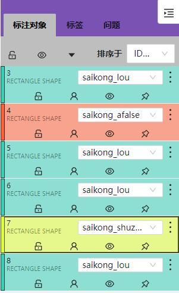
快速更换标签
您可以使用热键更改对象的标签. 为此，需要为标签分配一个数字(从0到9). 默认数字1,2…0被分配到前10个标签. 要指定一个数字，请单击侧边栏中标签名称右侧的按钮.
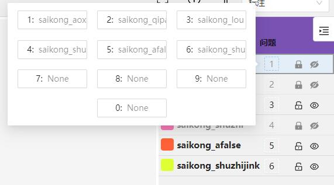
之后，您将能够为对象分配相应的标签 将鼠标悬停在它上面并按Ctrl + 数字(0-9).
如果你没有将光标指向该对象，按下Ctrl + **数字(0-9)**将设置所选标签为默认值，
这样你创建的下一个对象(使用N键)将自动分配这个标签.
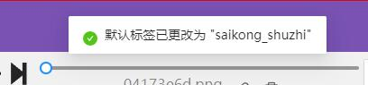
外观
颜色 选项
更改标注的配色方案:
-
标注对象— 每个图形都有一个随机的颜色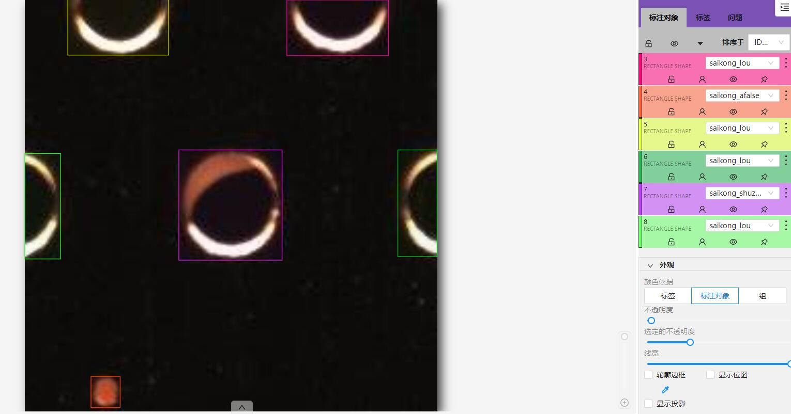
-
组— 每组图形都有自己随机的颜色，未分组的图形是白色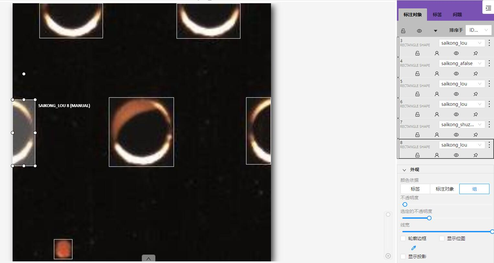
-
标签— 每个标签都有自己的随机颜色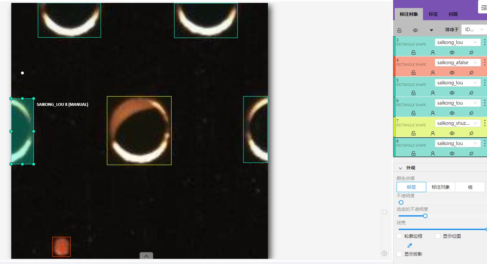
你可以改变任何随机的颜色指向一个框架或一个对象栏.
**填充不透明度**滑块
更改标注中每个图形的不透明度.
选定填充不透明度 滑块
更改所选对象的填充透明度。
线宽 滑块 更改图形边线的线宽
轮廓边框 复选框
你可以通过点击滴管图标来更改特殊形状的边框颜色.
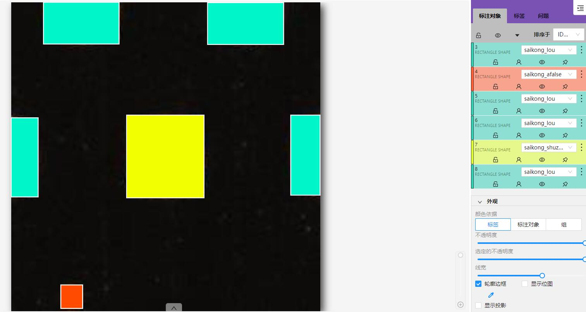
显示位图 复选框
如果启用，所有形状都显示为白色，背景为黑色.
隐藏对象侧边栏
隐藏 - 按钮隐藏对象的侧边栏.
1.11 - 标注工作区
在自训练平台中,工作区充当标注的中心枢纽 与图像、视频和各种工具交互可用于创建高质量的标注.
工作区包括以下元素:
| 元素 | 概述 |
|---|---|
| 1 | 顶部面板 and 基础导航. |
| 2 | 控制栏 |
| 3 | 标注对象栏 |
| 4 | 图像标注区，在本文中进行介绍. |
参阅:
图像设置
图像设置面板是一个通用的工具，用于微调图像的视觉方面. 是否需要调亮图像，增加对比度，或者做其他调整，这个面板是你的首选.
此外，该面板允许您在图像上覆盖网格，以获得更精确的标注
备注: 调整图像设置只会改变图片的显示方式. 图像本身将保持不变.
默认情况下，图像设置面板是不可见的. 要访问它，请单击向上箭头 () 图标位于工作区底部.
添加网格覆盖到图像
要将网格添加到图像中，请执行以下操作:
- 打开图像设置面板.
- 找到并选中允许您在图像上覆盖网格的框.
- 在尺寸字段中输入所需的数字，以毫米为单位指定网格单元格的大小.
- 从颜色下拉列表中，选择网格的颜色.
- 使用不透明度滑块来改变网格覆盖的透明度.
改变图像的颜色设置
要更改图像的颜色设置，请执行以下操作:
- 打开图像设置面板.
- 使用滑块更改颜色参数.
有四种颜色参数设置:
亮度增加和减少图像的整体亮度:
对比度是图像中亮度的范围，从最亮到最暗.
饱和度描述了颜色的强度.
要将设置重置为默认值，单击重置颜色设置
添加图层和z轴滑块
z轴滑块允许你添加标注层 同时隐藏位于后面的图层.
你也可以通过移动滑块到你需要的图层来在图层之间移动.
当同一帧中出现多个z层时，滑块会被激活。
点击滑块上的 + 添加一个新图层;
按下它，一个新的层被自动创建和激活.
你也可以使用 + 键和 - 键在层之间重定位对象.
与对象交互
工作区还具有以下特性:
-
右键单击对象将打开对象卡片. 这个接口包含了修改对象标签和属性的基础控件， 还提供了对操作菜单的访问.
-
右击多边形点将打开一个菜单, 你可以在其中删除点或设置起始点.
1.12 - 设置
打开设置可以打开标题中的用户菜单，选择设置项或按 F2.
设置有两个选项卡:
在播放器选项里您可以:
C和V快捷键的控制步长.- 控制
空格/播放按钮的速度. - 选择画布背景颜色.您可以选择背景颜色或手动输入(RGB或HEX格式).
重置缩放以原尺寸显示每个图像或像以前一样缩小 (在插值模式下默认启用，在标注模式下禁用).旋转所有图像复选框-切换所有帧或单个帧的旋转.平滑图像复选框-放大图像时的平滑图像.smoothed pixelized 
在工作区选项中您可以:
-
启用自动保存复选框 — 默认关闭. -
自动保存间隔 (分钟)输入框 — 默认15分钟. -
显示所有插值轨迹复选框 — 在侧边面板上显示每个插值对象的隐藏对象(默认关闭). -
始终显示标注对象详细信息- 在画布上显示对象的文本，而不仅仅是当对象被激活时: -
文本的内容- 设置标注对象的组成部分:ID- 标注对象的标识.属性- 标注对象的属性.标签- 标注对象的标签.来源- 创建对象的来源:MANUAL、AUTO或SEMI-AUTO.描述- 属性的描述.
-
文本的位置- 文本定位模式选择:自动- 标注对象详细信息将自动放置在空闲空间所在的位置.居中- 如果可能的话，对象细节将嵌入到相应的标注对象中.
-
文本字体的大小- 指定标注对象详细信息的文本大小. -
自动边界- 启用自动边界的多边形和折线在绘图/编辑. 要了解更多信息，请参阅本节 用多边形标注. -
智能多边形裁剪- 激活智能裁剪时编辑多边形 (要了解更多,请参阅本节 编辑多边形) -
在图像上显示标记- 显示/隐藏当前帧上的标记 -
AAM (Attribute annotation mode)缩放外边距输入框 — 在属性标注模式下定义形状的外边距(px为单位). -
控制点大小— 定义工具中任何可交互点的大小 -
多边形近似的默认点数通过这个设置，你可以选择多边形的默认点数. 适用于无服务器interactors和OpenCV scissors. -
点击
保存保存设置(设置会保存在服务器上，刷新页面后不会改变). 点击取消或按F2返回标注.
1.13 - 标注形状的类型
有几种形状可以用来标注图像:
矩形or边界框多边形点椭圆
这就是它们的样子:

1.14 - 形状模式 (基础)
用法示例:
- 为一组图像创建新的标注.
- 为已有的标注添加/修改/删除对象.

1.15 - 术语
标签
标签是标注对象的一种类型 (例如 缺口,铜渣等)
标注
标注是一组形状和轨迹。标注有几种类型:
- Manual 手动创建的
- Semi-automatic 它主要是自动创建的，但用户提供一些数据(例如插值)
- Automatic 在循环中是自动创建的
近似值
近似可以减少多边形中的点的数量. 可以用来减少标注文件和方便多边形的编辑.
状态
作业的状态.状态可以由指定的用户在作业内菜单中更改.
有几种可能的状态: 未开始, 进行中, 拒收, 已完成.
阶段
工作的阶段.该阶段通过任务页面上的下拉列表指定.
有三个阶段: 标注, 质检 或者 验收. 这个值会影响任务进度条.
子集
一个项目可以有子集。子集(Subsets)是任务的分组，使数据集的处理更容易.
它可以是测试、训练、验证或自定义子集.
2 - 高级
2.1 - 项目页面
项目页面
在此页上，您可以创建新项目，从备份创建项目，还可以查看已创建的项目.
在左上角有一个搜索栏，使用该搜索栏可以通过项目名称、分配人等找到项目. 右上角有排序，快速筛选和筛选.
筛选
应用筛选需禁用快速筛选.
筛选的工作原理与标注筛选类似, 你可以从属性中创建筛选规则, 操作符 和值并将规则分组. 更多细节，请参阅筛选部分. 了解更多关于日期和时间选择.
要清除所有筛选，请按清除筛选.
项目列表支持的属性
| 属性 | 支持的值 | 描述 |
|---|---|---|
分配人员 |
用户名 | 分配人是从事项目的用户. (在项目详情指定) |
所有者 |
用户名 | 拥有项目的用户 |
上次更新 |
最近修改的日期和时间(或取值范围) | 日期可以以dd.MM.yyyy HH:mm的格式输入 或者当你点击输入框时，选择出现在窗口中的日期 |
ID |
项目ID的数字或范围 | |
名称 |
名字 | 在“任务”页上-任务的名称， 在“项目”页上-项目的名称 |
设备 |
AOI和AVI | 检测设备 |
模型属性 |
内层 酸性外层 金OSP等 | AOI下的工序和AVI下的表面处理 |
创建项目
在自训练平台，您可以创建包含相同类型任务的项目. 所有与项目相关的任务都将继承一个标签列表.
要创建项目，请单击顶部菜单中的项目项，进入项目部分.
在“项目”页上，您可以看到项目列表，使用搜索,
或者通过点击+按钮并选择创建新项目来创建一个新项目.

注意，项目将在创建时选择的组织中创建. 阅读更多关于组织的信息.
你可以更改:项目名称, 检测设备(可选)标签列表(将用于作为项目的一部分创建的任务).
如果需要使用项目数据去训练,请设置相应检测设备和工序\表面
了解更多关于创建标签列表.
要保存和打开项目，请单击提交&打开按钮。你也
可以点击提交&继续按钮来依次创建多个项目

创建后，项目将出现在项目页面上。要打开一个项目，只需单击它.

在这里，您可以执行以下操作:
-
更改项目的标题.
-
打开
动作菜单。每个按钮负责动作菜单中的特定功能: -
更改项目的设备和模型属性
-
更改标签. 您可以在
JSon源码模式或构造模式下为现有标签添加新标签或属性. 您还可以更改不同标签的颜色. -
分配给 — 用于将一个项目分配给一个人. 开始输入分配人的名字和/或从下拉列表中选择正确的人.
-
任务— 具有搜索功能的特定项目的所有任务列表, 对项目中的任务进行排序和筛选. 阅读更多关于搜索的内容. 阅读更多关于排序和筛选的内容 可以为项目中的任务选择一个子集. 你可以使用可用的选项(训练、测试、验证)或者设置你自己的选项.
2.2 - 搜索
- 搜索所有字段(所有者、分配人、任务名称、任务状态). 要执行，请在搜索字段中输入搜索文本.
2.3 - 组织
组织是指由多个用户组成的团队在项目中一起工作并共享任务的特性.
创建一个组织，邀请你的团队成员，并分配角色，以使团队更好地完成共享的任务.
参阅:
个人工作区
当没有选择组织时，帐户的默认状态是激活的.
如果您没有选择一个组织，系统会将所有新资源直接链接到您的个人账户，从而阻止与他人共享资源.
当个人工作区被选中时，它将在菜单中被标记为一个标记.

新建组织
要创建一个组织，请执行以下操作:
-
登陆自训练平台.
-
在顶部菜单中，点击你的用户名 > 组织 > + 创建.

-
填写以下字段并单击提交

| 字段 | 描述 |
|---|---|
| 简短名称 | 将显示在菜单中的组织名称. |
| 完整名称 | 可选的。组织的全称. |
| 描述 | 可选的。组织描述. |
| 电子邮箱 | 可选的。你的电子邮件. |
| 电话号码 | 可选的。你的电话号码. |
| 地址 | 可选的。组织地址. |
创建后，组织页面将自动打开.
如果想要将来访问您的组织，请访问用户名 > 组织
备注, 如果你创建了超过10个组织, 下拉菜单中会出现一行切换组织.
切换组织
如果你有多个组织， 可以在任何给定的时间在这些组织之间切换.
按照这些步骤操作:
- 在顶部菜单中，选择您的用户名 > 组织.
- 在个人空间部分的下拉菜单中, 选择您想要的组织.
组织页面
组织页面是一个可以编辑组织信息和管理组织成员的地方.

备注 为了访问组织页面，你必须首先激活 该组织 (详情请参阅 切换组织). 如果没有激活，组织页面将保持不可访问.
当在下拉菜单中勾选一个组织，并且该组织的名称在右上角的用户名下可见时, 则认为该组织已激活.
要进入组织页面，请执行以下操作:
- 在顶部菜单中，点击你的用户名 > 组织.
- 在下拉菜单中选择组织.
- 在下拉菜单中，单击设置.

邀请成员进入组织
要向组织添加成员，请执行以下操作:
-
转到组织页面，然后点击邀请成员.
-
填写表格(见下文).

-
单击 Ok.
邀请成员表单包含以下字段:

| 字段 | 描述 |
|---|---|
| 邮箱 | 被添加到组织的用户的邮箱地址. 备注, 你邀请的用户必须已经在你发送邀请的电子邮件地址注册了帐户(在同一个实例上). |
| 角色下拉列表 | 定义用户的角色，该角色设置了在组织内的访问级别: |
| 邀请更多 | 将另一个用户添加到组织的按钮. |
组织的成员将显示在组织页面中。

组织成员可以离开组织
进入组织页面 > 离开组织.
组织所有者可以通过点击垃圾箱图标.
删除组织
您可以删除您创建的组织.
备注: 删除组织将删除所有相关资源 (标注, 作业, 任务, 项目等).
要移除一个组织，请执行以下操作:
- 跳转到组织页面.
- 在右上角单击动作 > 移除组织.
- 在对话框字段中输入组织的短名称.
- 单击 移除.
2.4 - 形状模式(高级)
该模式下的基础操作已在这一部分介绍: 形状模式(基础).
遮挡
遮挡是一个属性，当一个对象被另一个对象遮挡，或者在帧上不完全可见时使用.
使用快捷方式Q快速设置属性.

示例:下图中的三辆车应该标记为被遮挡.

如果一个框架包含太多的对象，并且由于许多形状大多放置在同一个位置，
所以很难对它们进行标注，那么将它们锁定是有意义的
锁定对象的形状是透明的，并且很容易标注新对象
此外，您不能意外地更改之前注释过的对象。快捷方式:L

2.5 - 用矩形标注
要了解有关使用矩形进行标注的更多信息，请参阅各节:
矩形旋转
要旋转矩形，拉旋转点. 旋转是围绕矩形的中心进行的.
以固定的角度旋转(15度的倍数),按住shift键。
在旋转的过程中，可以看到旋转的角度.

用矩形标注4点
这里提出了一种有效的边界框标注方法. 在开始之前，您需要确保选择4点绘制方法.

按形状进入绘图模式。点击四个极值点:
物体上最上面、最下面、最左边和最右边的物理点.
点击第四个点后，绘图将自动完成.
按Esc取消编辑.

2.6 - 用多边形标注
2.6.1 - 手动绘制
它用于语义/实例分割.
在开始之前，您需要在控制栏上选择多边形并选择正确的标签.

- 点击“形状”进入绘图模式. 有两种绘制多边形的方法: 通过点击或在屏幕上拖动鼠标同时按住“Shift”创建点.
| 点击 | 按住Shift+拖拽 |
|---|---|
 |
 |
- 未按
Shift键时，可以放大/缩小(滚动鼠标滚轮时) 和移动(点击鼠标滚轮并移动鼠标时), 也可以右键删除前一点. - 你可以使用
对象侧边栏中的选定不透明度滑块来改变多边形的不透明度. 您可以在对象侧边栏章节中阅读更多内容. - 再次按
N或点击顶部面板上的完成按钮来完成形状. - 创建多边形后，您可以移动点或通过右键单击并选择
删除点来删除它们 或在上下文菜单中按下Alt键单击.
2.6.2 - 使用自动边界绘图

绘制多边形时可以使用自动边框. 使用自动边框可以自动跟踪标注中现有多边形的轮廓.
-
要做到这一点，请进入设置->工作区选项卡并启用
自动边界或在绘制多边形时按Ctrl键.
-
开始绘制/编辑多边形.
-
其他形状的点将被突出显示，这意味着多边形可以附加到它们上.
-
定义要重复的多边形路径部分.

-
点击轮廓部分的第一个点.

-
然后单击位于路径部分的任何点。选中的点将以紫色高亮显示.

-
点击最后一个点，这个点的轮廓将自动生成.

此外，您可以在点数字段中设置固定的点数, 然后自动停止绘制. 要启用拖动，你应该在多边形内部右键单击并选择切换固定属性.
下面你可以看到不透明度和黑色描边的效果:

如果您需要标注小物体, 请将创建任务对话框中的图像质量增加到95，以便您方便.
2.6.3 - 编辑多边形
要编辑一个多边形，你必须在按住Shift的同时点击它，它将打开多边形编辑器.
-
在编辑器中，您可以创建新的点或通过关闭另一个点上的线来删除多边形的一部分.
-
当
智能多边形裁剪选项在设置中激活时, 考虑两个标准来决定在自动编辑过程中应该切断多边形的哪一部分.- 第一个标准是切割点的数量.
- 第二个标准是切割曲线的长度.
如果两个标准都建议切割相同的部分，则算法自动工作，如果不是，则必须由用户做出决定. 如果你想手动选择一个多边形的哪一部分应该被切断, 在设置中禁用
智能多边形裁剪。 在这种情况下，关闭多边形后，您可以选择要保留的多边形部分.
-
您可以按
Esc取消编辑.
2.7 - 用椭圆标注
用于道路标志标注 工业中标隔离圈 通孔等用于分割.
先，你需要选择控制栏上的椭圆.

选择一个标签，然后点击形状开始绘制. 椭圆的创建方法与矩形相同, 你需要指定两个相对的点,
这个椭圆会被嵌在一个想象的矩形中. 按N或点击顶部面板上的完成按钮来完成形状.
你可以使用旋转点旋转椭圆，方法与矩形相同.
2.8 - OpenCV和AI工具
在AI和OpenCV工具的帮助下，以半自动和自动模式对数据进行标注.
参阅:
交互器
交互器是AI和OpenCV工具的一部分.
使用交互器标记图像中的对象 半自动创建多边形.
创建多边形时，可以使用正点 或者是负点(对于某些模型):
- 正点定义对象所在的区域。
- 负点定义对象不在的区域。

AI工具: 使用交互器标注
要使用交互器进行标注，请执行以下操作:
- 点击魔术棒
 , 然后转到交互器标签页.
, 然后转到交互器标签页. - 从标签下拉菜单中，选择多边形的标签.
- 从交互器下拉菜单中，选择一个模型 (详阅 交互器模型).
点击问号以查看每个模型的信息:
- (可选)如果模型返回掩膜，你需要 转换掩膜到多边形，使用转换掩膜到多边形切换.
- 点击 交互.
- 左键点击可添加正点，右键点击可添加负点.
可以添加的点数取决于模型. - 在顶部菜单, 点击 完成 (或者 Shift+N, N).
AI工具: 增加额外的点
**注意:**更多的点可以提高轮廓的准确性，但会使形状编辑更加困难. 较少的点使形状编辑更容易，但降低了轮廓精度.
每个模型都有一个用于注释的最小所需点数。 一旦达到了所需的点数，就开始请求自动发送到服务器。 服务器处理请求并向帧中添加一个多边形。
为了得到一个更准确的轮廓, 首先推迟服务器的请求来增加点数:
- 按住Ctrl键.
在顶部面板上，推迟按钮将变成蓝色. - 向图像中添加点.
- 当准备好时，松开Ctrl键.
如果你在对象完成时使用了将掩膜转为多边形， 你可以像编辑多边形一样编辑它.
你可以用滑块改变多边形的点数:

AI工具: 删除点
要删除一个点，请执行以下操作:
- 将光标悬停在要删除的点上.
- 如果这个点可以被删除，它会放大，光标会变成一个十字.
- 左键点击这个点.
OpenCV: 智能剪刀
要使用智能剪刀, 请执行以下操作:
-
在菜单栏上，单击 OpenCV
 然后等待库加载.
然后等待库加载.
-
转到Drawing选项卡，选择标签，并单击智能剪刀按钮.

-
在已分配对象的边界上添加第一个点.
你会看到一条线重复物体的轮廓. -
添加第二个点，使前一个点在限制阈值内.
之后，在这些点之间会自动创建一条重复对象边界的线.
-
要完成放置点，在顶部菜单上单击完成(或键盘上的N).
这样就创建了一个多边形.
你可以用滑块改变多边形的点数:
要增加或降低操作阈值，按住Ctrl并滚动鼠标滚轮.
在绘制过程中，可以用鼠标左键点击最后一个点来删除它.
设置
交互器模型
| 模型 | 工具 | 描述 | 例子 |
|---|---|---|---|
| Segment Anything Model (SAM) | AI工具 | 分割任意模型(SAM)产生高 质量的对象掩膜，它可用于生成图像中所有对象的 掩膜。它在包含1100万张图像的数据集 和 11亿个掩膜的数据集上进行了训练，并在各种分割任务上具有强大的零样本性能。 更多信息，请参见: |
 |
| Deep extreme cut (DEXTR) |
AI工具 | 这是原始模型的优化版本， ，于2017年底推出。它使用对象 的极值点的 信息来获得它的掩膜。然后掩膜 被转换为多边形。 目前这是CPU上最快的交互器。 更多信息，请参见: |
 |
| Feature backpropagating refinement scheme (f-BRS) |
AI工具 | 该模型允许使用正点(应该在前景上左键点击) 和负点(如果需要，应该在背景上右键点击) 掩膜 。如果可能的话，建议在GPU上运行模型。 有关更多信息，请参见: |
 |
| High Resolution Net (HRNet) |
AI工具 | 该模型允许使用正点(应该在前景上左键点击) 和负点(如果需要，应该在背景上右键点击) 掩膜 。如果可能的话，建议在GPU上运行模型。 有关更多信息，请参见: |
 |
| Inside-Outside-Guidance (IOG) |
AI工具 | T他的模型使用边界框和内部/外部点来创建一个掩膜。 首先，你需要创建一个边界框来包裹对象。 然后你需要使用正负点来 告诉模型哪里是前景，哪里是背景。 负点是可选的。 有关更多信息，请参阅:: |
 |
| 智能剪刀 | OpenCV | 智能剪刀是一种CV方法， 通过放置点并在点与点之间 自动绘制直线来创建多边形。 相邻点之间的距离受到动作阈值的限制， 显示为与光标绑定的红色正方形。 有关更多信息，请参见: |
 |
目标检测
目标检测是AI工具的一部分.
使用目标检测自动识别和定位图像中的物体.
标签匹配
每个模型都是在数据集上训练的，并且只支持数据集的标签.
例如:
- DL模型的标签为
缺口. - 你的任务(或项目)的标签是
针孔.
为了进行标注，您需要匹配这两个标签以给DL模型一个提示，
在本例中为缺口 = 针孔。
如果你有一个不在DL标签列表中的标签，你将无法匹配它们.
因此，支持的深度学习模型只适用于某些标签.
要查看每个型号的标签列表，请参见 目标检测模型.
使用目标检测标注
要使用目标检测进行标注，请执行以下操作:
-
点击魔术棒
, 然后转到目标检测选项卡. -
从模型下拉菜单中选择模型 (参见 目标检测模型).
-
从左下拉框中选择DL模型标签，从右下拉框中选择与您的任务匹配的标签.

-
(可选)如果您需要改变预标注的阈值，可填入阈值(区间为(0,1)) 默认0.5..
-
点击 标注.
这个动作会自动标注一帧. 参见自动标注.
目标检测模型
| 模型 | 描述 |
|---|---|
| 内层 | 用于AOI内层检测使用的AI模型 |
| 酸性外层 | 用于AOI酸性外层检测使用的AI模型 |
| 碱性外层 | 用于AOI碱性外层检测使用的AI模型 |
| 树脂塞孔 | 用于AOI树脂塞孔检测使用的AI模型 |
| 金OSP | 用于AVI金OSP 检测使用的AI模型 |
2.9 - 自动标注
宜美智自训练中的自动标注是一种您可以使用预训练模型自动预标注数据的工具.
参见:
运行自动标注
要开始自动标注，请执行以下操作:
-
在顶部菜单上，单击任务.
-
找到你想标注的任务，点击动作 > 自动标注.

-
在自动标注对话框中，从下拉列表中选择一个 模型.
-
匹配 模型和任务的标签.
-
(可选)如果您需要改变预标注的阈值，可填入阈值(区间为(0,1)) 默认0.5.
-
(可选)如果你需要删除所有之前的标注，切换到清除旧标注。

1.点击标注.
后会在进度条上显示注释的进度.

单击“取消”可以随时停止自动标注.
标签匹配
每个模型都是在数据集上训练的，并且只支持数据集的标签.
例如:
- DL模型的标签为
缺口. - 你的任务(或项目)的标签是
针孔.
为了进行标注，您需要匹配这两个标签以给DL模型一个提示，
在本例中为缺口 = 针孔。
如果你有一个不在DL标签列表中的标签，你将无法匹配它们.
模型
| 模型 | 描述 |
|---|---|
| 内层 | 用于AOI内层检测使用的AI模型 |
| 酸性外层 | 用于AOI酸性外层检测使用的AI模型 |
| 碱性外层 | 用于AOI碱性外层检测使用的AI模型 |
| 树脂塞孔 | 用于AOI树脂塞孔检测使用的AI模型 |
| 金OSP | 用于AVI金OSP 检测使用的AI模型 |
2.10 - 备份任务和项目
概述
在标注平台上，您可以备份任务和项目。 这可以用于备份您PC上的任务或项目，或传输到另一台服务器.
创建备份
要备份任务或项目，请打开操作菜单并选择“备份任务”或“备份项目”。.

(可选) 在自定义文件名文本字段中指定备份文件名称,
否则备份项目的文件名称将由掩码 project_<项目名>_backup_<日期>_<时间>.zip给出
备份任务的文件名task_<任务名>_backup_<日期>_<时间>.zip.

从备份中创建
要从备份创建任务或项目，请转到任务或项目页面,
单击从备份创建按钮并选择所需的存档.

结果，您将得到一个任务，其中包含先前导出的任务的数据、参数和标注.
备份文件结构
结果，你会得到一个包含数据的zip存档, 任务或项目，任务规范和标注具有以下结构:
.
├── data
│ └── {用户上传的数据}
├── task.json
└── annotations.json
.
├── task_{id}
│ ├── data
│ │ └── {用户上传的数据}
│ ├── task.json
│ └── annotations.json
└── project.json
2.11 - 删除帧
删除帧
您可以从任务中删除当前帧. 这一帧既不会出现在UI中，也不会出现在导出的标注中. 因此，可以标记不受标注约束的损坏帧.
-
转到作业标注视图，点击删除图像按钮(Alt+Del).
备注: 当您使用快捷方式删除时, 该帧将立即被删除，无需额外确认.

-
之后，您将被要求确认帧删除.
备注: 该帧中的所有标注将被删除，未保存的标注将被保存 并且该帧将在标注视图中不可见(直到您在设置中使其可见). 如果任务中有一些重叠，并且删除的帧落在这个间隔内, 那么这将导致该帧在另一个作业中也不可用.
设置已删除帧的可见性和导航
I如果您需要启用显示删除的帧，您可以在设置中这样做.
-
进入设置，选择播放器设置.

-
点击显示已删除的帧复选框。然后关闭设置对话框.

-
然后，您将能够浏览已删除的帧. 但是标注工具将不可用。删除的帧在相应的叠加中不同.
-
有几种视图方法可以在不启用此选项的情况下浏览已删除的帧:
- 通过直接导航方法转到框架:导航滑块或框架输入字段,
- 通过直接链接进入框架.
-
带有步长的导航将不计算已删除的帧.
恢复删除的帧
您还可以在任务中恢复已删除的帧.
-
如前面所述，打开已删除帧的可见性，然后转到要恢复的已删除帧.

-
点击还原图标。框架将立即恢复.
2.12 - 导出/导入数据集并上传标注
导出数据集
可以将数据集导出到项目、任务或作业.
-
要下载最新的标注，必须首先保存所有更改. 点击
保存按钮。有一个快捷键Ctrl+S来快速保存标注.
-
之后，点击
菜单按钮. 任务和项目数据集的导出和导入通过动作菜单进行. -
按
导出数据集按钮.
-
选择导出数据集的格式.
-
要使用数据集下载图像，请启用
保存图像选项. -
(可选)要给结果归档文件命名，请使用
自定义文件名字段.
导入数据集
您只能将数据集导入项目。在这种情况下，数据将被划分为子集.
要导入数据集，请在项目页面上执行以下操作:

- 打开
动作menu. - 按
导入数据集按钮. - 选择数据集格式(如果在导出期间没有指定自定义名称，则格式将在存档名称中).
- 将文件拖动到文件上传区域或单击上传区域，通过资源管理器选择该文件.

在导入过程中，您将能够跟踪导入的进度。
上传标注

在任务或作业中，您可以上传标注。
为此，在任务的动作菜单中或在顶部面板的作业菜单中选择上传标注项，
选择您计划上传标注的格式，并通过资源管理器选择标注文件或存档.
2.13 - 快捷键
许多UI元素都有快捷提示。将你的指针指向一个必需的元素来查看它.

| 快捷键 | 常见 |
|---|---|
| 主要功能 | |
F1 |
打开/隐藏可用快捷键列表 |
F2 |
打开/隐藏设置对话框 |
Ctrl+S |
将标注的所有更改发送到服务器 |
Ctrl+Z |
取消与对象相关的最新操作 |
Ctrl+Shift+Z 或 Ctrl+Y |
取消撤消操作 |
按住鼠标滚轮 |
动图像帧(例如，在绘制时)。 |
| 播放器 | |
F |
转到下一帧 |
D |
转到前一帧 |
V |
向后移动多少帧，取决于设置里的步长 |
C |
向前移动多少帧，取决于设置里的步长 |
-> |
搜索满足筛选 的下一帧或包含任何对象的下一帧 |
<- |
搜索满足筛选 的前一帧或包含任何对象的前一帧 |
空格 |
启动/停止自动换帧 |
` 或 ~ |
聚焦在元素上以改变当前帧 |
| 模式 | |
N |
用相同的参数重复最新的绘图过程 |
M |
激活或禁用合并形状的模式 |
Alt+M |
激活或停止分割形状的模式 |
CTRL+G |
激活或停用模式来分组形状 |
Shift+G |
重置选定形状的组(在组模式下) |
Esc |
取消任何活动的画布模式 |
| 图像操作 | |
Ctrl+R |
改变图像角度(增加90度) |
Ctrl+Shift+R |
改变图像角度(减去90度) |
G |
显示/隐藏GERBER |
| 对象的操作 | |
Ctrl |
在绘图/编辑期间切换多边形和折线的自动边界 |
按住 Ctrl |
当形状处于活动状态时进行修复 |
在点上Alt+单击 |
删除点(当鼠标悬停在多边形、折线、点组成的点上时使用) |
在点上Shift+单击 |
编辑形状(当鼠标悬停在多边形、折线或点的一个点上时使用) |
在形状上->-单击 |
显示对象侧边栏中的对象元素 |
T+L |
更改侧边栏中所有对象的锁定状态 |
L |
更改活动对象的锁定状态 |
T+H |
更改侧边栏中对象的隐藏状态 |
H |
更改活动对象的隐藏状态 |
Q 或 / |
更改活动对象的锁定属性 |
Del 或 Shift+Del |
删除活动对象。使用shift强制删除锁定对象 |
- 或 _ |
把一个活动对象放到离用户更远的地方(减小z轴的值) |
+ 或 = |
将活动对象“更靠近”用户(增加z轴值) |
Ctrl+C |
复制形状到内部剪贴板 |
Ctrl+V |
从内部剪贴板粘贴一个形状 |
粘贴时按住Ctrl |
当粘贴形状从缓冲区f或多次粘贴. |
Ctrl+B |
在下面的帧中复制对象 |
Ctrl+(0..9) |
更改标签f或激活的对象或f或如果没有对象被激活，则下一个绘制的对象 |
2.14 - 筛选
使用该功能有一些原因:
- 使用筛选时，与过滤器不匹配的对象将被隐藏.
- 快速导航到包含感兴趣对象的帧之间.
你可以使用键盘上的
左箭头和右箭头键来实现这个目的， 或者通过右键单击并选择通过筛选切换来自定义用户界面按钮。 如果没有与筛选条件匹配的对象，你将前进到包含任何已注释对象的前一帧或下一帧.
要使用筛选，你需要点击顶部面板上的按钮.
新建筛选
它将打开一个窗口用于筛选输入。在这里你会发现两个按钮:Add rule和Add group.

规则
Add rule按钮为对象显示添加规则。规则可以使用以下属性:

支持的标注属性
| 属性 | 支持的值 | 描述 |
|---|---|---|
标签 |
任务中的所有标签名称 | 标签名 |
类型 |
形状，轨迹或标签 | 对象的类型 |
形状 |
所有形状类型 | 形状的类型 |
覆盖 |
真或假 | 覆盖 (详情) |
宽度 |
单位px | 形状宽度 |
高度 |
单位px | 形状高度 |
服务器ID |
数字 | 服务器上对象的ID (您可以通过动作菜单形成到对象的链接来查找) |
对象ID |
数字 | 客户端中对象的ID (在对象侧栏中指出) |
属性 |
其他一些字段包括具有 类似类型或特定属性值的属性 |
由标签指定的任何字段 |
支持的属性运算符
== - 等于; != - 不等于; > - 大于; >= - 大于等于; < - 小于; <= - 小于等于;
Any in; Not in - 这些操作符允许您在一条规则中设置多个值;

Is empty; is not empty – 这些操作符不需要输入值,意思是为空和非空.
Between; Not between – 这些操作符允许您在两个值之间选择一个范围.
Like - 此操作符指示属性必须包含一个值.
Starts with; Ends with - 按开头或结尾筛选.
有些属性支持您可以选择的两种类型的值:
您可以添加多个规则，为此单击add rule按钮并设置另一个规则.
一旦你设置了一个新规则，你就可以选择通过哪个操作符来连接它们: And 或者 Or.

所有后续规则将由所选的操作符连接.
单击提交来应用筛选，或者如果您希望通过不同的操作符连接多个规则，请使用group.
分组
要添加组，请单击Add group按钮。在组内，您可以创建规则或组.

如果组中有多个规则，它们可以用And或or操作符连接.
规则组将像组外的单独规则一样工作，并将由组外的操作员加入.
您可以在其他组中创建组，为此，您需要单击组内的add group按钮.
你可以改变规则和小组。要移动规则或组，请通过按钮拖动它.
要删除规则或组，请单击删除按钮.
如果你激活Not按钮，不匹配组的对象将被过滤掉.
点击提交来应用筛选.
取消 按钮取消筛选. 清除筛选按钮移除筛选.
一旦应用，筛选框自动出现在最近使用列表中。列表的最大长度是10.
排序和筛选列表
在项目, 项目页面上的任务列表, 任务, 作业,你可以使用排序和筛选.
应用的排序和筛选将显示在您的浏览器的URL, 因此，您可以通过应用排序和筛选来共享页面.
排序
您可以按以下参数进行排序:
- 作业列表: ID, 分配人, 上次更新, 阶段, 状态, 任务ID, p项目ID, 任务名称, 项目名称.
- 任务列表或项目页上的任务列表: ID, 所有者, 状态, 分配人, 上次更新, 子集, 模式, 维度, 项目ID, 名称, 项目名称.
- 项目列表: ID, 分配人, 所有者, 状态, 名称, 上次更新.
要应用排序，请将参数拖动到水平栏上方的顶部区域. 水平线以下的参数将不会被应用. 通过移动参数，你可以改变优先级, 首先，排序将根据上述参数进行.
按下排序按钮可切换升序排序/降序排序.
快速筛选
快速筛选包含几个常用的筛选:
分配给我- 只显示分配给您的那些项目、任务或工作.归我所有- 只显示属于您的项目或任务.未完成- 只显示那些状态不是已完成的项目、任务或作业.
日期和时间的选择
当创建上次更新规则时，您可以使用选择窗口选择日期和时间.

您可以使用箭头或通过单击年份和月份来选择年份和月份。
要选择日期，在日历上点击它，
要选择时间，可以使用滚动列表选择小时和分钟。
或者你可以点击Now按钮来选择当前的日期和时间。
如需申请，请按Ok.
2.15 - 质检
检查标注的特殊模式允许你指向帧中包含错误的对象或区域.
质检
要进行质检，您需要将任务页面上所需作业的阶段更改为验证,并分配一个用户来进行检查
现在工作会以不同的质检界面打开. 你也可以使用顶部面板的界面切换器切换到质检模式.

质检模式是一种UI模式，有一个特殊的问题工具，你可以使用它来识别对象
或框架中的区域，并描述问题.
-
要做到这一点，首先点击控制侧边栏上的
打开一个问题图标: -
然后单击框架中的一个位置以突出显示该位置或通过按住鼠标左键突出显示该区域并描述问题. 要选择一个对象，右键单击它并选择
打开一个问题或选择几个快速问题之一 该对象或区域将以红色阴影显示.
-
创建的问题将出现在工作区和对象侧边栏的
问题选项卡中. -
标记所有问题后，保存注释，打开菜单并选择作业状态
拒收或完成.
质检之后，其他用户将能够看到问题，对每个问题发表评论，并将问题的状态更改为`已解决``.
问题修复后，从菜单中选择完成作业来完成任务.
或者，您可以在任务页面中将阶段切换到验收.
解决问题
质检之后，你可以在对象侧栏的问题选项卡中看到这些问题.
-
你可以使用
问题标签上的箭头来导航包含问题的帧.
-
在工作区中，您可以单击
问题，您可以发送关于该问题的评论, 或者，如果问题已解决，则将状态更改为解决. 你可以通过点击删除来移除这个问题 (如果您的帐户有适当的权限). -
如果在一个地方创建了几个问题，您可以通过将鼠标悬停在问题上并滚动鼠标滚轮来访问它们.
如果问题解决了，您可以通过单击重新打开按钮重新打开问题.
2.16 - 形状分组
这个特性允许我们对多个形状进行分组.
You may use the Group Shapes button or shortcuts:
-
ctrl+G-在组模式下开始选择/结束选择 -
Esc-关闭群组模式 -
Shift+G-重置选中形状的分组
你可以选择形状，点击它们或者选择一个区域.
分组后的形状将在转储标注中包含group_id.
也可以将颜色分布从实例(默认)切换到组.
你必须切换通过组颜色分类复选框.
没有group_id的形状将以白色高亮显示.